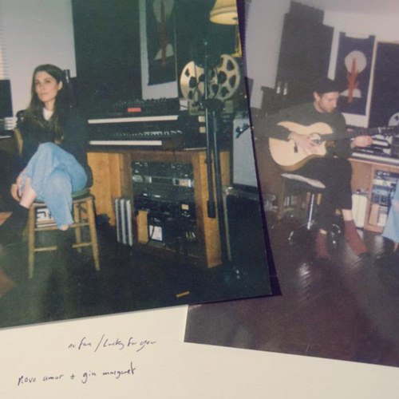
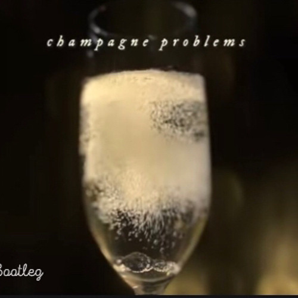
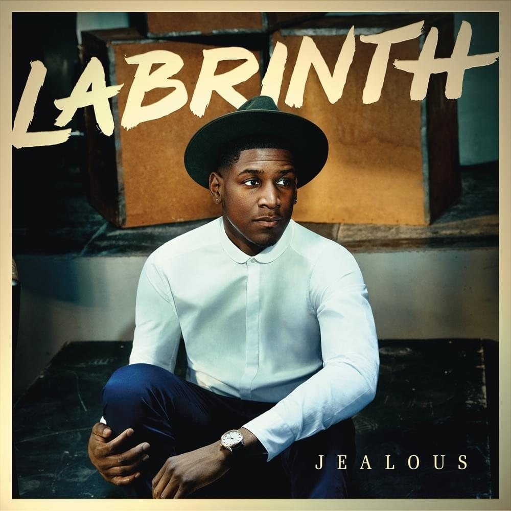
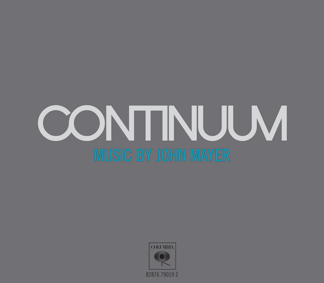
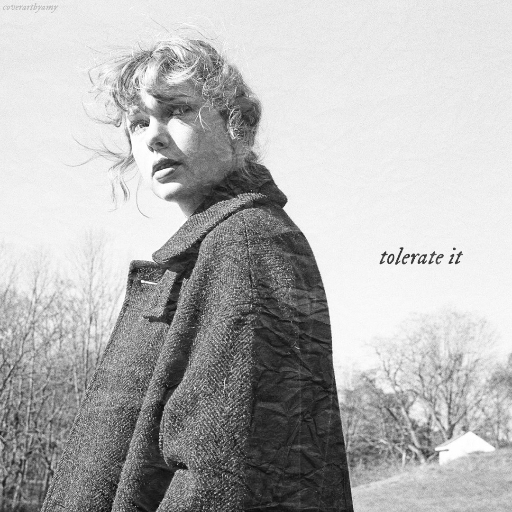
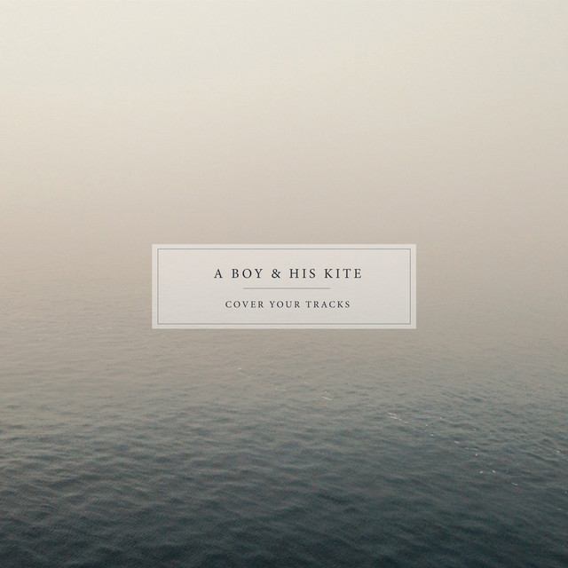
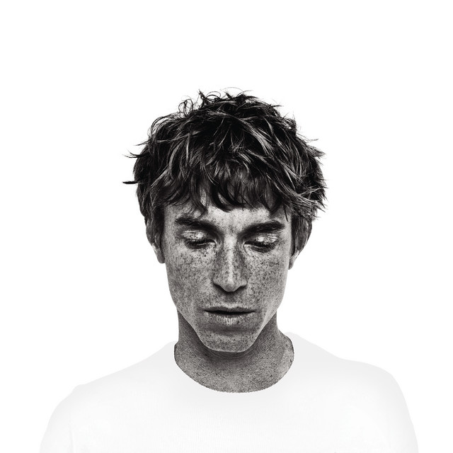

Top 1

All Too Well (10 minute version) by Taylor Swift
I really like how I can relate on the lyrics.
Top 2
Lucky For You by Novo Amor and Gia Margaret
I just like the vibe and the meaning behind the lyrics.
Top 3
Champagne Problems by Taylor Swift
"One for the money, two for the show, I never was ready, so I watch you go" ouch.
Top 4
Jealous by Labrinth
One of my favorite disassociating songs.
Top 5
Slow Dancing In A Burning Room by John Mayer
This is a very good song, I highly recommend this.
Top 6
Tolerate It by Taylor Swift
Another song that I can very much relate to.
Top 7
Only Love Can Hurt Like This by Paloma Faith
Love, is indeed a different type of pain.
Top 8
Cover Your Tracks by A Boy and His Kite
I discovered this through Twilight: Breaking Daw part 2.
Top 9

The Night We Met by Lord Huron
It just brings back a lot of memories.
Top 10
Élodie by Ben Mazué
I think the "J'écoute, peut-être trop, j'écoute À tel point qu'à la fin je sais plus" hits me the most.